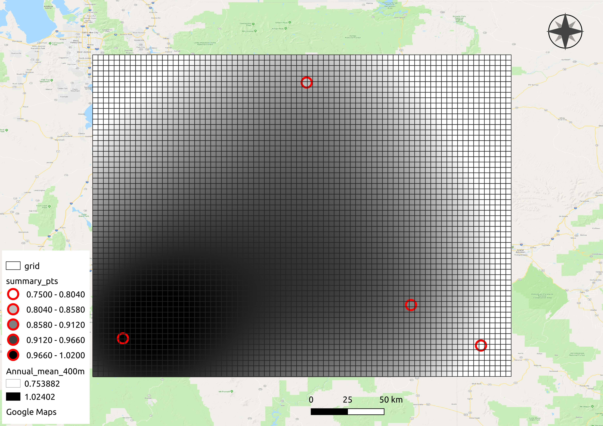

Getting Started¶
Installation¶
Currently we recommend using the provided conda environment file to install gridwxcomp and its dependencies in a virtual environment. Download the environment.yml file and then install and activate it. If you don’t have conda get it here. To install dependencies in a virtual environment run
$ conda env create -f environment.yml
To activate the environment before using gridwxcomp run
$ conda activate gridwxcomp
Optionally, install using pip,
$ pip install gridwxcomp
Due to dependency conflicts you may have issues directly installing with pip before activating the conda environment.
Alternatively, or if there are installation issues, you can manually install. First activate the gridwxcomp conda environment (above). Next, clone or download the package from GitHub or PyPI and then install locally with pip in “editable” mode. For example with cloning,
$ git clone https://github.com/WSWUP/gridwxcomp.git
$ cd gridwxcomp
If you are experiencing errors on installing the gridwxcomp conda environment above with dependencies. For example, if the Shapely package is not installing from the enironment.yml file, remove it or modify it from the “setup.py” file in the install requirements section before you install gridwxcomp from source with:
$ pip install -e .
More help with installation issues related to dependency conflicts can be found in the gridwxcomp issues on GitHub, be sure to check the closed issues as well.
Quick start from command line¶
This example uses data provided with gridwxcomp including climate variable time series data for four climate stations, it uses the gridMET as the gridded dataset however any uniform gridded dataset can be used with gridwxcomp if extra information including a vector grid file is provided.
After installation you can find the location of the data needed for the example by typing the following at the command line,
$ python -c "import pkg_resources; print(pkg_resources.resource_filename('gridwxcomp', 'example_data/Station_Data.txt'))"
Once complete, this example will calculate bias ratios between station and gridMET ETr (reference evapotranspiration), spatially interpolate GeoTIFF rasters of bias ratios at 400 meter resolution, and calculate zonal statistics of mean bias ratios for each gridMET cell in the region of the stations, similar to what is shown in the figure below.
The same procedure can be done for climate variables other than ETr, e.g. observed evapotranspiration, temperature, precipitation, wind speed, short wave radiation, etc.
After installing with pip the gridwxcomp command line interface can be used from any directory, the first step pairs climate station data with their nearest gridMET cell and produces a CSV file used in the following steps,
$ gridwxcomp prep-input <PATH_TO example_data/Station_Data.txt>
This will result in the file “merged_input.csv”. Next download matching gridMET climate time series with OpeNDAP by running
$ gridwxcomp download-gridmet-opendap merged_input.csv -y 2016-2017
The time series of gridMET data that correpond with the stations in “merged_input.csv” will be saved to a new folder called “gridmet_data” by default. In this case only the years 2016-2017 are used.
Next, to calculate mean monthly and annual bias ratios for each station/gridMET pair along with other statistics and metadata and save to CSV files,
$ gridwxcomp calc-bias-ratios merged_input.csv -o monthly_ratios
Last, to calculate interpolated surfaces of mean bias ratios and extract zonal means to gridMET cells using the default interpolation method (inverse distance weighting):
$ gridwxcomp spatial monthly_ratios/etr_mm_summary_comp_all_yrs.csv -b 5
The [-b 5] option indicates that we want to expand the rectangular bounding area for interpolation by five gridMET cells (extrapolation in the outer regions).
GeoTIFF rasters of interpolated ratios will be saved to “monthly_ratios/spatial/etr_mm_invdist_400m/”. Note, the gridMET variable name (etr_mm), the interpolation method (invdist), and the raster resolution (400m) are specified in the output directory. A fishnet grid with gridMET id values and a point shapefile of station ratios should all be created and saved in the “monthly_ratios/spatial/” directory.
The output file “monthly_ratios/spatial/etr_mm_invdist_400m/gridMET_stats.csv” contains monthly bias ratios for each gridMET cell in the interpolation region, similar to what is shown below.
GRIDMET_ID
Jan_mean
Feb_mean
Mar_mean
…
515902
0.66
0.76
0.96
…
514516
0.66
0.77
0.96
…
513130
0.67
0.77
0.97
…
511744
0.67
0.78
0.97
…
510358
0.68
0.79
0.97
…
…
…
…
…
…
Note GRIDMET_ID is the index of the master gridMET dataset 4 km fishnet grid starting at 0 in the upper left corner and moving across rows and down columns. This value can be joined with previously created data, e.g. the ID values can be joined to centroid coordinates of gridMET cells.
Bar plots that show the residual between station mean ratios and interpolated estimates are saved to “monthly_ratios/spatial/etr_mm_invdist_400m/residual_plots/”.
To get abbreviated descriptions for any of the above gridwxcomp commands use the [--help] option, e.g.
$ gridwxcomp spatial --help